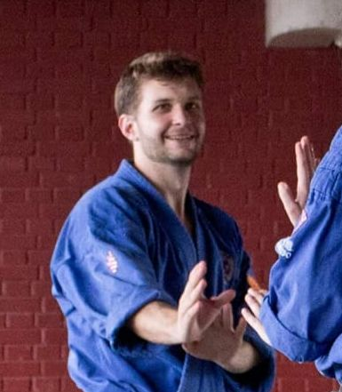
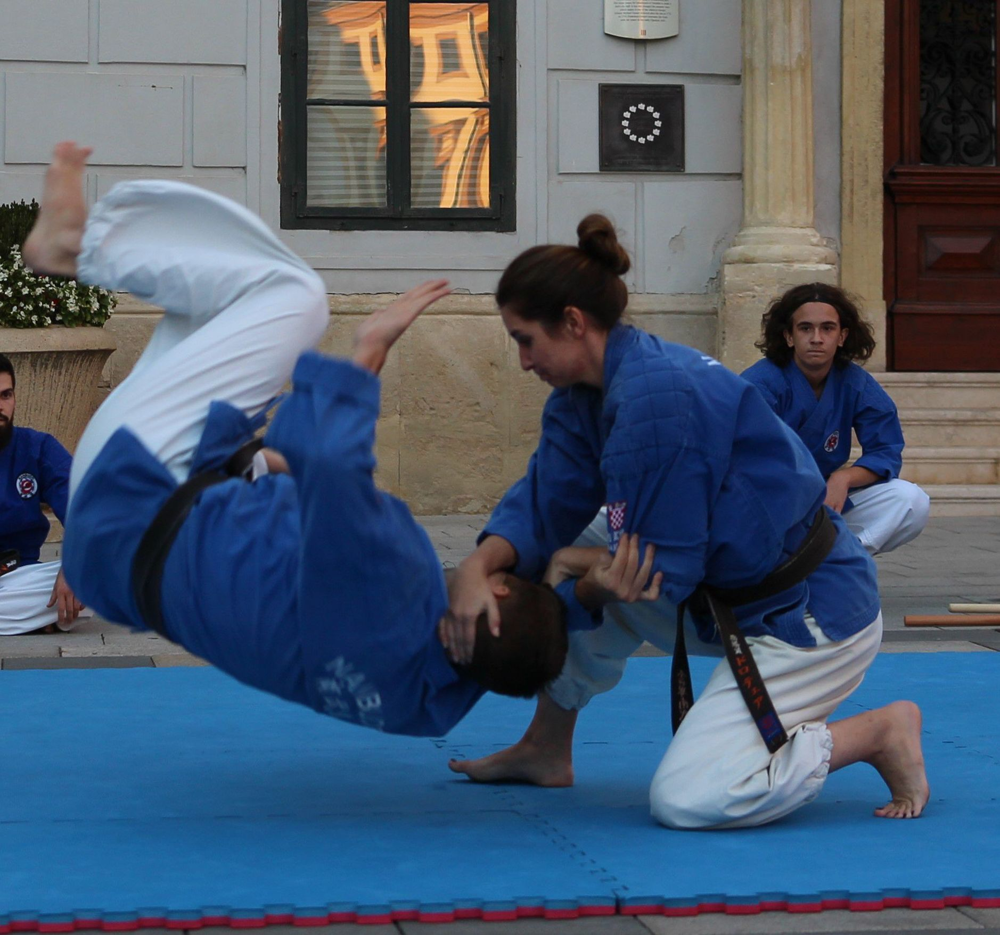
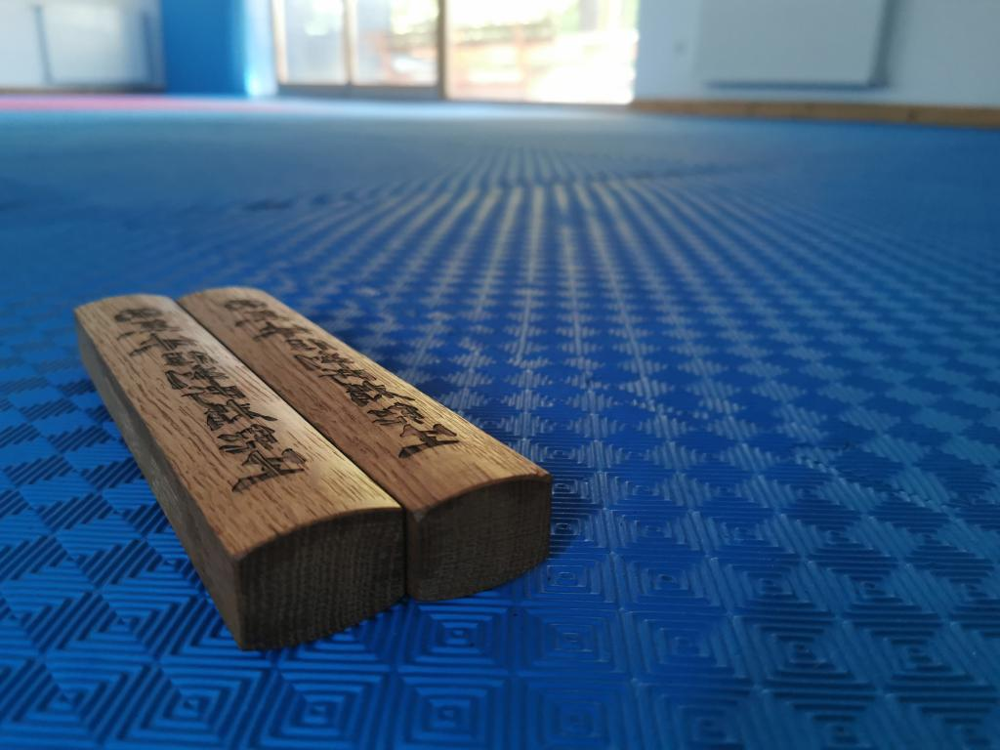
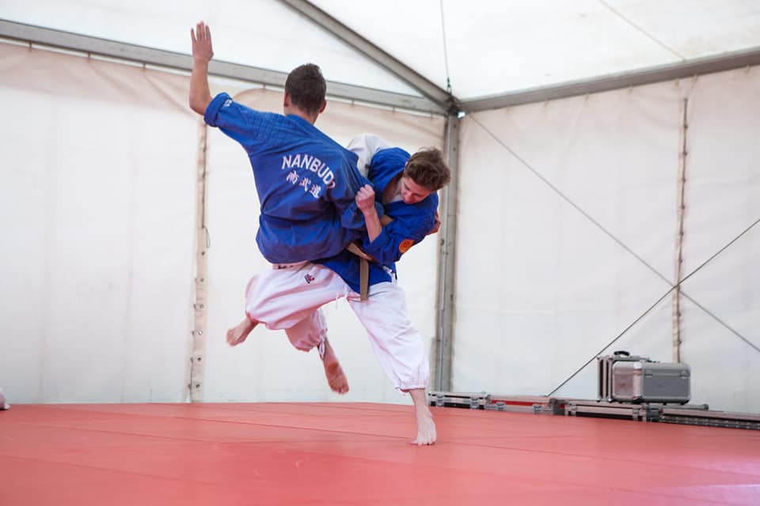
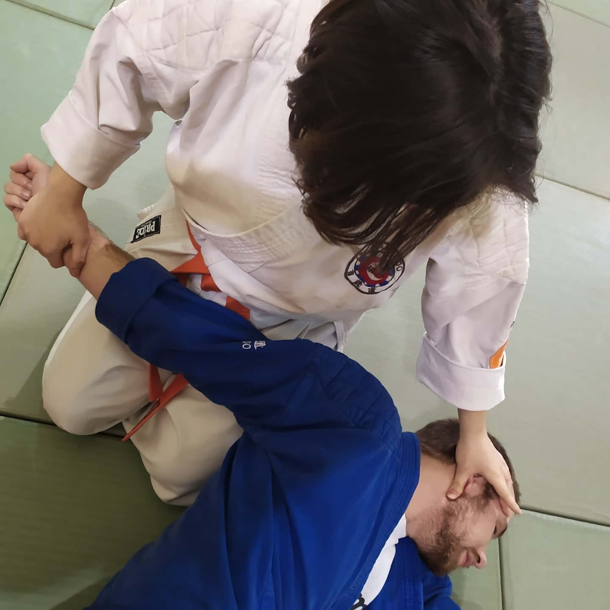
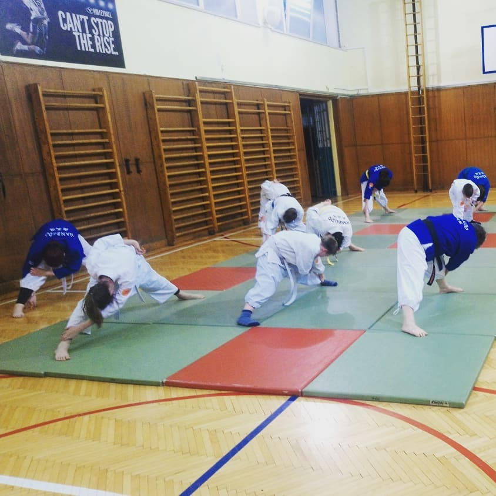
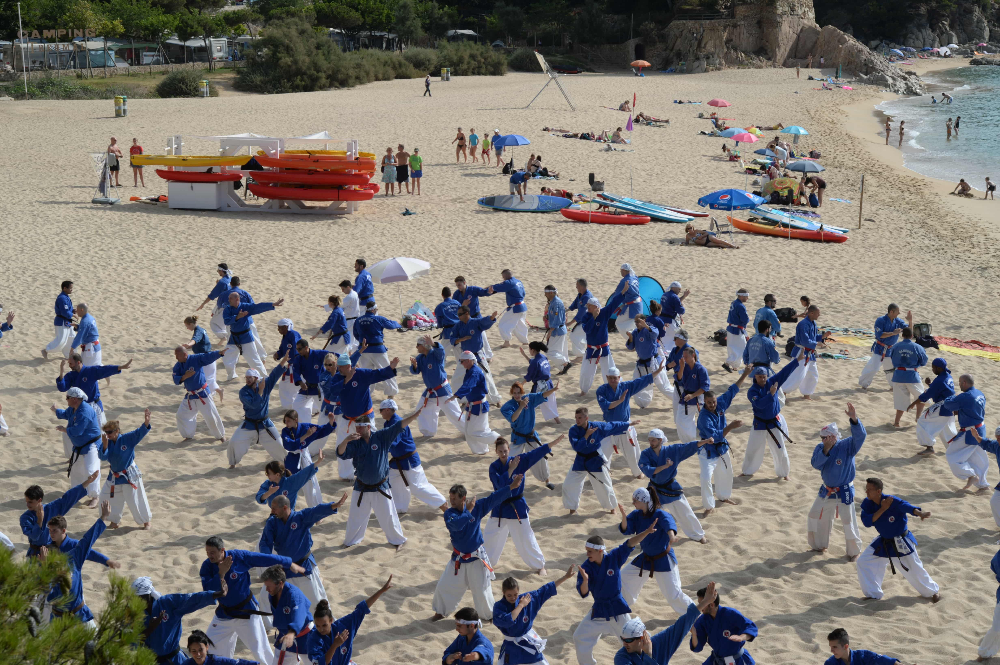
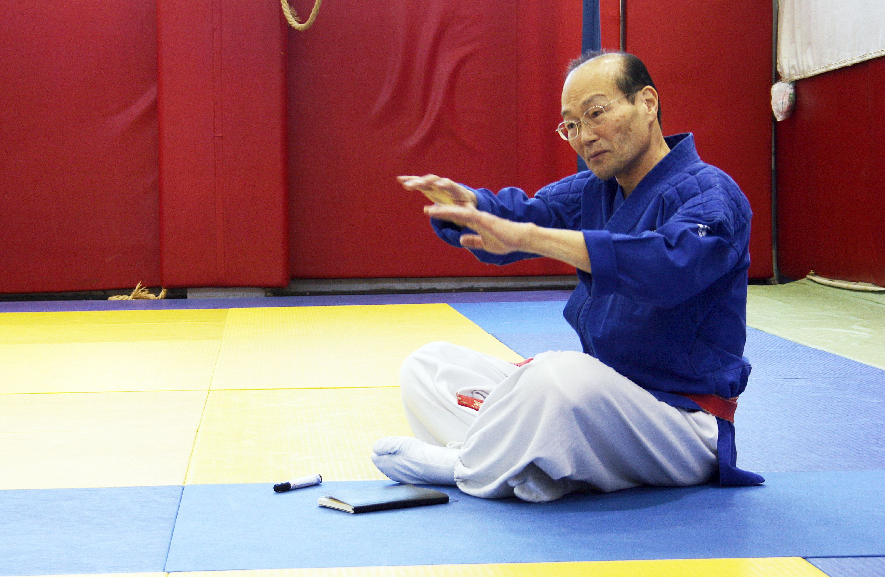

Nanbudo je relativno mlada borilačka vještina osnovana 1978. godine od strane Yoshinaa Nanbua. Značenje nanbudoa skriveno je u konceptu neograničenosti i nedovršenosti - vještina se neprestano razvija i nikada se ne završava. Zbog toga se s pravom zove živa vještina.
Nanbudo kombinira udarce i blokove, bacanja i poluge, te meditaciju i disanje u jedinstvenom sustavu. Svaki element ima svoju svrhu - udarci razvijaju snagu i brzinu, bacanja i poluge uče efikasnosti kroz tehniku, a meditacija uravnotežava tijelo i um. Vježbač se ne prilagođava potpuno vještini, nego vještina se prilagođava potrebama svakog pojedinca, čineći nanbudo dostupnim za sve uzraste i razine.
Nanbudo mogu trenirati svi uzrasti - od djece do starijih osoba. To je put cjeloživotnog razvoja koji kombinira borilačke tehnike, energijsku praksu i mentalni trening u harmoničnom sustavu prilagođenom modernom čovjeku.
Tehnike borbe, kate, bacanja i poluge
Meditacija, disanje i fleksibilnost
Samodisciplina, fokus i razvoj karaktera kroz trening
Kroz učenje tehnika padova (ukemi) i kompleksnih kretnji, razvija se iznimna kontrola nad tijelom i agilnost.
Savladaj širok spektar ručnih (tsuki) i nožnih udaraca (geri), gradeći snagu, brzinu i preciznost pokreta.
Rad s tradicionalnim drvenim oružjem (bo, bokken) zahtijeva i razvija visoku razinu koncentracije i mentalne discipline.
Kroz trening u dojou, uči se poštovanje prema instruktorima i partnerima te važnost ustrajnosti u postizanju ciljeva.
Motoričke vježbe i igre koje razvijaju osnovna znanja. Fokus na sistemu padova (ukemi), koordiniranom sparingu i nanbudo formama.
Kyu i dan program obuhvaća sve aspekte: japansku gimnastiku, borilačke tehnike, terapeutski aspekt, forme i tehnike s oružjem.
Neizbježan dio nanbudo treninga. Rad s drvenim štapom (bo) i drvenom sabljom (bokken) s principima i katama.
Osnovne tehnike - učenje pravilnih stavova, blokova i udaraca
Vježbanje kata koje kombiniraju tehnike u skladnu cjelinu
Tehnike padova - ključan element za sigurnost i napredne tehnike
Rad s partnerom - primjena naučenih tehnika u kontroliranim uvjetima
Rad s drvenim oružjem - za naprednije članove

Glavni sensei - 6. dan
Mihael se nanbudom bavi od svoje 10. godine. Osposobljen za poučavanje nanbudoa od Hrvatskog instituta za kineziologiju. Sudjelovao je na velikom broju seminara pod vodstvom osnivača vještine, Yoshinaa Nanbua. Kao dugogodinji natjecatelj, osvojio je niz medalja na međunarodnim i nacionalnim natjecanjima.

Sensei - 5. dan
Dorotea se nanbudom bavi od svoje 8. godine. Znanje je gradila na brojnim seminarima pod vodstvom Yoshinaa Nanbua te sudjelovanjem na demonstracijama u zemlji i inozemstvu. Osposobljena za poučavanje nanbudoa od Hrvatskog instituta za kineziologiju.






Osnovna škola Marina Držića
Nalješkovićeva 4
10000 Zagreb, Hrvatska
Četvrtak
20:00 - 22:00